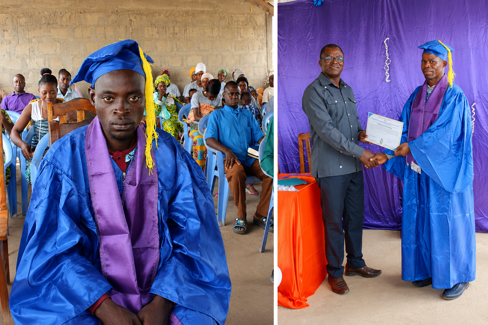
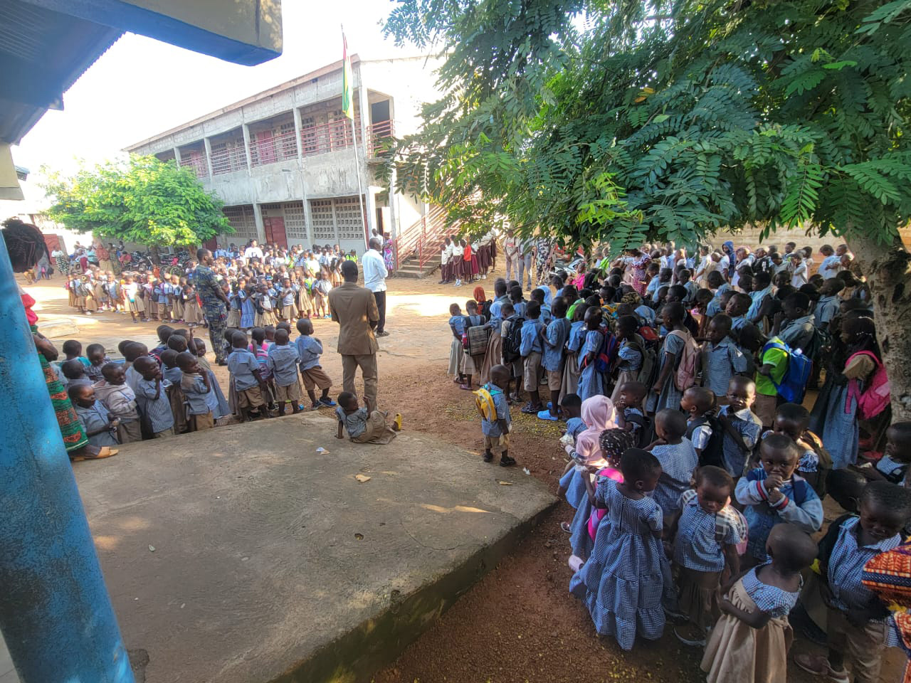
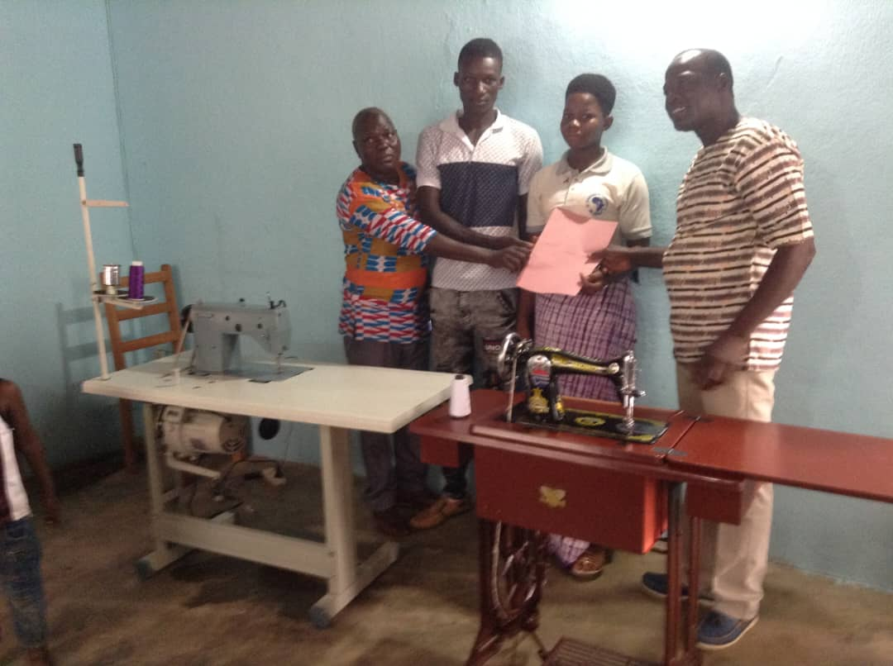
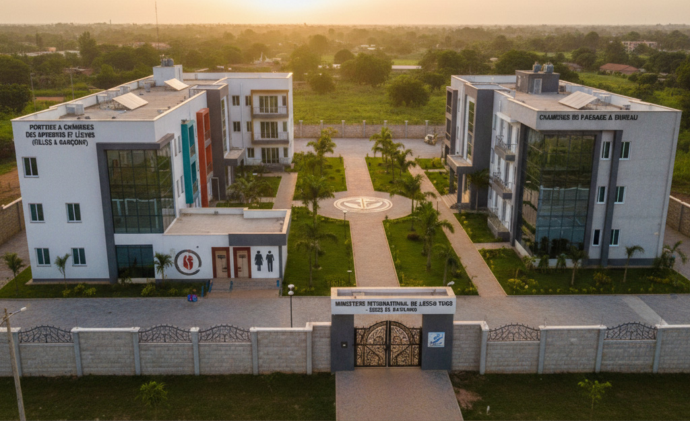

Centre de Formation Biblique et Agropastorale (CFBA)

Le Centre de Formation Biblique et Agro-pastorale (CFBA), créé en 2019 à Tabendè dans la préfecture de Sotouboua, constitue une expression concrète de la vision du Ministère International de Jésus (MIJ) Togo de sauver l'homme tout entier. Cette institution forme des élèves pasteurs en associant l'enseignement biblique à la formation agro-pastorale, afin de préparer des serviteurs de Dieu spirituellement solides et socialement autonomes. Le CFBA vise à former des leaders capables de répondre aux besoins spirituels, économiques et communautaires de leurs milieux. Notre mission centrale est de façonner des hommes et des femmes de foi, capables d'enseigner avec clarté, d'impacter leur génération par un leadership intègre et de conduire les communautés vers une maturité spirituelle holistique selon les directives de la Grande Commission. Par des programmes structurés couvrant l'herméneutique, la théologie systématique, la missiologie, la gestion ecclésiastique et l'agropastorale, le CFBA demeure un creuset d'excellence pour tous ceux qui désirent approfondir leur connaissance des Écritures et accomplir leur vocation céleste avec puissance, sagesse et sanctification. À travers cette approche holistique, l'Eglise MIJ assure la formation d'une relève pastorale engagée dans la transformation durable des communautés et le développement du Royaume de Dieu.
Écoles Primaires Evangéliques "LA SOURCE"

Dans le souci de mener à bien sa vision, l'Église Ministère International de Jésus (MIJ) s'est engagée dès ses débuts à promouvoir l'accès à l'éducation pour les populations qu'elle sert. Elle avait initié dès sa naissance la création de nombreuses écoles afin de répondre aux besoins éducatifs des populations. Dans un esprit de partenariat et de service public, plusieurs de ces écoles ont été progressivement transférées à l'État, témoignant de l'engagement durable de l'Église en faveur du développement intégral des communautés. Afin de continuer dans cet élan aujourd'hui, elle a créé des écoles primaires à Dapaong et à Sotouboua, dénommées « EPE La Source ». Ces établissements, comptant un effectif d'environ 300 chacune, contribuent aujourd'hui à la formation académique et morale des enfants et se distinguent par l'excellence de leurs résultats, faisant ainsi la fierté des parents et des communautés locales. Les Écoles Primaires Evangéliques (EPE) "LA SOURCE" incarnent l'engagement sociétale et éducatif du Ministère International de Jésus Togo, fondé sur la conviction que l'instruction académique associée aux valeurs chrétiennes constitue le socle indispensable d'une société épanouie et responsable. Grâce à un corps professoral qualifié et dévoué, des infrastructures adaptées et un programme pédagogique conforme aux exigences nationales enrichies par des valeurs éthiques élevées, l'institution LA SOURCE prépare la jeunesse togolaise à devenir des acteurs de progrès, de paix et d'innovation pour notre nation et au-delà.
Programme des Apprentis Filles et Garçons

L'Eglise a également mis en place un programme d'encadrement des apprentis filles et garçons au siège de Dapaong. Conscients des conditions de vie financière de nos communautés, nous avons réfléchis à ce programme pour aider les frères et sœurs dont les familles éprouvent des difficultés pour leur hébergement en ville dans le cadre de leurs formations professionnelles. Ce programme inclus également les apprenants du secondaire 1 et 2. Cette initiative vise à accompagner les jeunes en apprentissage professionnel par une formation spirituelle, morale et sociale, afin de favoriser leur épanouissement intégral. À travers cet encadrement, l'Église contribue à former des jeunes responsables, craignant Dieu et aptes à devenir des acteurs de transformation dans leurs métiers et leurs communautés.
Les centres des étudiants

Dans le souci d'accompagner la jeunesse estudiantine et de la logique de sa vision de sauver l'homme en entier, l'Eglise Ministère International de Jésus dispose des centres d'accueil et d'encadrement des étudiants dans les deux villes universitaires du Togo _ Lomé et Kara. Ces centres offrent un cadre propice à la vie spirituelle, à la communion fraternelle, à l'accompagnement académique et au développement personnel des étudiants. Ils constituent des espaces de formation et de préparation d'une génération de leaders chrétiens engagés, capables d'impacter positivement leurs universités et la société.